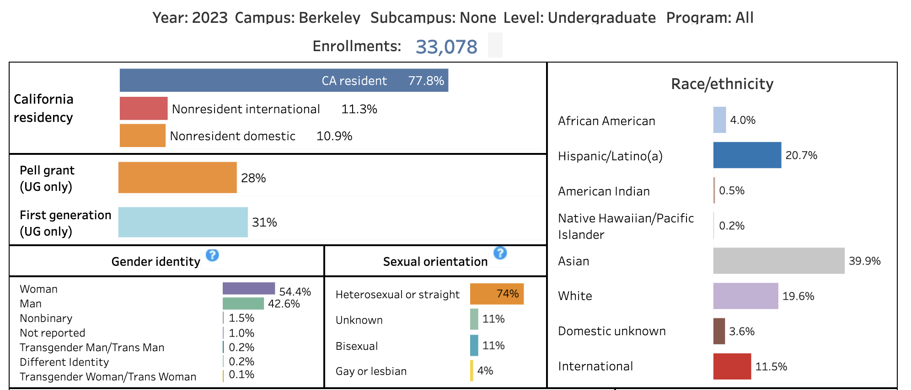

5327 / 1000000[1] 0.005327Take a 20-some year-old student (e.g. 20, 21, 22 years-old). For illustration purposes, let us consider a student born in California around 2001-2002.
According to the CDC, https://www.cdc.gov/nchs/data/nvsr/nvsr52/nvsr52_10.pdf, there were 529,357 live births in California in 2002. Of these, 263,061 were Hispanic live births (230,386 Mexican in case you are curious)
To make the math easier, let’s assume that there were 250,000 Hispanic babies born in California per year during the years 2001, 2002, 2003, 2004. Or put another way, there were one million Hispanic babies born in California during these four years. The actual number might be a bit higher but let’s cap it to 1 million.
Based on UC enrollment data, in the Fall 2023 semester there were about 5327 Hispanic undergraduate students enrolled in UC Berkeley.
https://www.universityofcalifornia.edu/about-us/information-center/fall-enrollment-glance

What does this mean? Well, assuming you are a Hispanic born in California during 2001-2004 or so, your chances of attending UC Berkeley are about:
Or basically 1 in 200 (1/200).